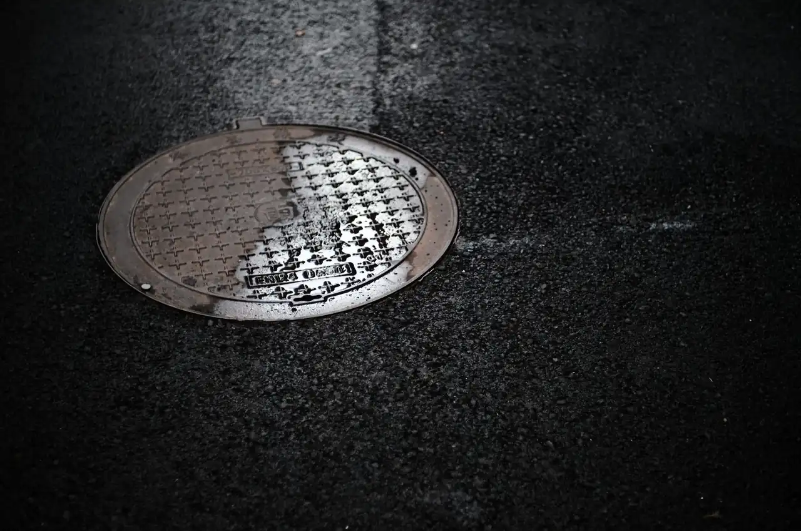

Gas Leak Detection
Gas Leak Detection in Redlands: Find the Leak, Fix It Right
Gas Leak Detection in Redlands starts with a trained technician at your door, not a phone tree. We serve homeowners and property managers across Redlands, CA who smell gas, hear a hiss, or got a spike on the utility bill. Our team pinpoints the source with acoustic and tracer gas tools, then completes gas leak repair in Redlands the same visit whenever parts allow.
Service overview
What Gas Leak Detection in Redlands Actually Involves
Gas Leak Detection in Redlands is the process of locating escaped natural gas or propane in a home or commercial line using instruments rather than guesswork. We start with a pressure testing kit to confirm the system is losing pressure, then sweep the run with a tracer gas leak detector and an ultrasonic leak detector. A thermal imaging camera helps us see temperature anomalies behind drywall and under slabs. Once we mark the leak, we isolate that section, repair it, and re-pressurize to verify the fix holds before we leave.
Redlands homes range from 1920s bungalows near Downtown to newer builds in North Redlands, and both have their own failure patterns. Older copper pipe and galvanized steel corrode from the inside, while newer PEX tubing can fail at fittings. In San Bernardino County, summer heat pushes attic and crawlspace lines through big temperature swings, and that expansion and contraction loosens joints over time. If you need gas leak detection Redlands CA near me, we run the full sweep and hand you a written summary of what we found.

Practical benefits
Why Redlands Homeowners Call Us First
A gas leak is not a wait-and-see problem. These are the outcomes our Redlands customers care about most, and the reasons they keep our number saved.
Same-Day Leak Location
Most calls placed before noon get a technician on site the same day. We confirm the leak with a pressure testing kit and tracer gas leak detector, then show you the reading so you know it is real before any repair starts.
Repairs Done in One Visit
When the leak is on an accessible line, we complete gas leak repair Redlands the same appointment. Copper pipe, PEX tubing, and PVC pipe sections get swapped, sealed, and re-tested. You are not waiting days for a second crew.
Code-Correct Workmanship
Every repair follows California plumbing code and is performed under a California Contractor License (C-36 Plumbing). We pressure-test after the fix and document the result, which matters if you ever sell the home or file a claim.
Upfront Pricing, No Surprises
You get a flat price before we open a wall. Affordable gas leak repair Redlands CA means you know the number first. No hourly creep, no mystery line items, and no charge for the estimate.
How service works
Our Gas Leak Detection Process, Step by Step
Five steps from your first call to a verified, leak-free line. Most residential jobs wrap inside a single visit, and you get a plain-English summary at the end.
STEP 01
Phone Triage
We ask three questions: what you smell, where you smell it, and whether anyone feels lightheaded. If there is an active odor, we tell you to leave the building and call the utility first. That call takes under five minutes and gets a technician routed to you.
Tools and methods
Tools and Methods We Use on Every Job
Sewerin Tracer Gas Leak Detector
Picks up trace gas concentrations at joints and fittings where a leak is too small to smell. We use it on every sweep because it catches what your nose misses.
Fluke Ultrasonic Leak Detector
Converts the high-frequency sound of escaping gas into an audible signal. Ideal for noisy utility rooms and exterior lines where a hiss is hard to isolate.
Thermal Imaging Camera
Reveals temperature differences behind drywall and under slabs. It narrows the search area before we open anything, which saves you money on access work.
Pressure Testing Kit
Confirms whether the gas system is actually losing pressure. This is the first test we run, and it tells us if a leak exists before we start chasing one.
RIDGID Video Pipe Inspection Camera
Lets us see inside gas and water lines under slabs. On buried lines, it shows corrosion and root intrusion that no surface tool can detect.
Milwaukee and DeWalt Power Tools
Used for cutting, fitting, and sealing pipe during repair. Cordless gear keeps the job moving in tight crawlspaces and utility closets.
ASSE and IAPMO Standards
We follow ASSE and IAPMO guidelines for leak detection and pipe repair. That means proper isolation, correct test pressures, and documented results. It is the difference between a repair that holds and one that fails inspection.
California Plumbing Code Compliance
All gas line work is performed under a California Contractor License (C-36 Plumbing) and meets state code. We size replacement pipe correctly, use approved fittings, and test to the required pressure before closing up walls.
OSHA Safety Protocols
Gas work carries real risk. We follow OSHA protocols for confined spaces, ventilation, and ignition control. If a space is unsafe to enter, we ventilate first and test the air before anyone goes in.
Backflow Prevention Certification
Our technicians hold Backflow Prevention Certification, which matters when gas and water systems share a utility trench. We can test and protect both sides without calling in a second trade.

Where this service fits
When to Call for Gas Leak Detection
You just bought a 1950s home in Downtown Redlands and the inspection flagged original gas lines.
We run a full pressure test and sweep every accessible joint with a tracer gas leak detector. Older copper pipe and galvanized steel often have multiple weak points, so we map the whole run rather than just the flagged spot. You get a clear picture of which sections are sound and which need replacement, so you can budget the work instead of guessing.
A tenant in your North Redlands rental reports a gas smell and you cannot get there tonight.
We respond 24/7, confirm the leak on site, and handle the repair if it is accessible. You get photos and a written summary the same night so you know exactly what happened. The tenant is safe, the leak is fixed, and you have documentation for the owner and your insurance file.
You are doing a kitchen remodel and need to move the gas range to a new wall.
Before any new line goes in, we pressure-test the existing run and cap or reroute as needed. New sections use copper pipe or PEX tubing sized to code, with pipe sealant at every fitting. The remodel passes inspection without a gas issue holding up your permit, and the new line is tested and documented.
Your gas bill doubled last month and you cannot find the source.
We pressure-test the system to confirm a loss, then sweep with acoustic leak detection and a thermal imaging camera. Slab lines get a video pipe inspection camera to see inside the pipe. You know whether it is a gas leak, a slab leak on the water side, or a meter issue, and you get a repair plan with a flat price.
Local execution
How Gas Leak Detection Runs in Redlands
Redlands sits in San Bernardino County where summer heat regularly pushes past 100 degrees and winter nights drop into the 40s. That swing is hard on gas lines. Copper pipe expands and contracts, fittings loosen, and joints that were tight in spring start weeping by fall. In older Downtown Redlands homes, we often find original galvanized steel that has corroded from the inside out. In North Redlands, newer PEX tubing tends to fail at crimp fittings rather than along the pipe itself. Both patterns show up in our gas leak detection Redlands CA near me calls every week. We also handle gas leak repair in Redlands California 24/7, which matters when a leak shows up on a holiday weekend. If you need affordable gas leak repair in Redlands, we quote the diagnostic upfront and apply it to the repair if you approve the work. Every job is tested to code before we leave, and we document the result for your records.
Downtown Redlands
Older housing stock with original copper and galvanized gas lines. We see more pinhole leaks and corroded joints here than anywhere else in the city.
North Redlands
Newer construction with PEX tubing and tighter crawlspaces. Leaks here usually trace to crimp fittings or appliance connections rather than the pipe run.
South Redlands
Mix of mid-century homes and citrus-era properties. Slab-on-grade construction means gas lines run under concrete, so thermal imaging is essential.
East Redlands
Larger lots with longer exterior gas runs to pool heaters and detached structures. Exterior lines take more sun exposure and fail faster at fittings.
Summer heat above 100 degrees
Thermal expansion stresses gas line joints and can open a leak that was sealed all winter. We see a spike in calls from June through September.
Winter temperature swings into the 40s
Contraction loosens fittings that were tight in summer. A line that passed a spring test can fail by December, which is why we re-test after every repair.
Expansive clay soil in San Bernardino County
Soil movement shifts buried gas lines and can crack pipe or pull fittings apart. Slab leaks and buried line leaks are common after a wet winter.
Older housing stock near Downtown
Original gas lines from the 1920s through 1950s have exceeded their service life. We frequently find multiple weak points on a single run.
Problems we solve
Gas Problems We Solve for Redlands Homes
Most gas leak calls fall into a handful of patterns. Here are the ones we see most in Redlands, what happens if you ignore them, and how we handle each.
Rotten egg smell near the water heater or furnace
We sweep the appliance connection with a tracer gas leak detector, confirm the failed fitting or valve, and replace it with new copper pipe or PEX tubing. The line gets re-pressurized and held before we leave. A persistent odor means active gas escape. Left alone, it can accumulate in a closed utility closet and reach ignitable concentration near a pilot light or burner.
Unexplained jump in the monthly gas bill
We pressure-test the full run to confirm a loss, then use a thermal imaging camera and acoustic leak detection to pinpoint it. Most slow leaks trace back to a pinhole leak or a corroded joint. A slow leak wastes gas around the clock. Over a few months, that adds up to hundreds of dollars, and the leak keeps growing as corrosion spreads along the pipe.
Hissing sound at the meter or along an exterior line
We isolate the section, locate the failure with an ultrasonic leak detector, and complete gas leak repair Redlands the same visit when the line is accessible. Exterior runs are usually the fastest to fix. An audible hiss is a large leak. It can escalate fast, especially near a foundation where gas can migrate into a crawlspace or basement.
Headaches or dizziness indoors with no obvious cause
We run a full sweep of every gas appliance and connection, including the range, dryer, and water heater. If the line holds pressure, we check for sewer line leak or backdraft issues instead and tell you what we find. Low-level gas exposure causes symptoms before the smell becomes obvious. Continued exposure is a health risk, particularly for kids and older adults.


A practical standard for every visit.
Clear planningPrepared arrivalsCareful workLocal follow-through
Experience in the details
Six Years of Leak Work in the Inland Empire
Leak Detection Redlands CA has been diagnosing and repairing leaks since 2020, and gas work has been part of that mix from day one. Our technicians train on Sewerin and Fluke detection gear, hold Backflow Prevention Certification, and work to ASSE and IAPMO standards on every job. We have run gas leak detection and repair Redlands CA calls on slab-on-grade homes, raised foundations, and commercial kitchens. When a homeowner in the 92373 or 92374 ZIP codes calls about a gas smell, we know the common failure points before we pull into the driveway.
- Licensed under a California Contractor License (C-36 Plumbing) for all gas line repair work.
- Trained on Sewerin and Fluke tracer gas and ultrasonic detection equipment.
- Backflow Prevention Certification held by field technicians on staff.
- Work performed to ASSE and IAPMO standards, with OSHA-compliant safety protocols.
- Hundreds of leak calls completed across San Bernardino County since 2020.
Where we work
One local team. A lot of ground covered.
Notes from local customers
What Redlands Customers Say
Smelled gas near the water heater on a Sunday night. They picked up on the first ring and had a tech out in under an hour. He found a failed fitting on the copper pipe with a tracer detector, showed me the reading, and had it repaired and re-tested before midnight. Flat price, no surprises.
We manage six rentals and had a tenant report a gas smell in 92374. The team swept the whole unit, confirmed the leak was at the range connection, and fixed it the same visit. They sent photos and a written summary I could forward to the owner. That documentation saved me a headache.
Got a spike on my gas bill with no smell at all. They pressure-tested the line, found a pinhole leak under the slab with a thermal camera, and marked the exact spot on the floor. Repair took about three hours. Bill dropped back to normal the next cycle.
Most residential gas leak detection in Redlands runs $180 to $450 in 2026, depending on how much line we have to sweep and whether walls or slabs need to be opened. The diagnostic fee is quoted upfront. If we find the leak and you approve the repair, we apply the diagnostic toward the repair total.
A licensed plumbing contractor with gas-line experience fixes them, and that is what we are. We handle gas leak repair in Redlands California 24/7, from pinhole leaks on copper pipe to failed fittings on PEX tubing. We do not touch utility-side meters, but everything from the meter to your appliances is our scope.
It depends on the cause. Sudden damage, like a line struck during excavation, is often covered. Gradual corrosion on old copper pipe is usually excluded as a maintenance item. We document the failure with photos and a written summary so your adjuster has what they need to make a call.
Smell for rotten egg odor near appliances and the meter, listen for a hiss at connections, and watch your utility bill for an unexplained jump. Soapy water on a joint will bubble if gas is escaping. If you find one, leave the building and call us or the utility from outside. Do not flip switches on your way out.
Keep exploring
Other Leak Services We Handle in Redlands
Your next step is waiting
Smell Gas? Get Gas Leak Detection in Redlands Today
If you smell rotten eggs or hear a hiss near a gas appliance, leave the building and call us from outside. We are licensed, insured, and available 24/7 across Redlands and San Bernardino County. One call gets a technician headed your way.
Start with the basics
Call Us for Leak Detection
Reach us at +19097294657 any time, day or night. We answer live, ask a few questions about what you are seeing, and get a tech headed your way. Most Redlands calls get a same-day slot, and emergencies get dispatched right away. You can also email info@leakdetectionredlandsca.com with photos of the damage.